Theorieunterricht in Offenbach
Langweilige Theoriewar gestern.
Ich lese keine Folien vor. An jedem Abend arbeitet ihr selbst mit: in Gruppen, im Rollenspiel oder mit Arbeitsblättern.
Zu den Minispielen- 14
- Lektionen à 90 Minuten
- 7
- Abende mit je zwei Lektionen
- 180
- Minuten pro Abend, Pause nach 90

Alle Bilder auf dieser Seite sind echte Folien aus meinem Unterricht. Tippe eine Folie an, um sie groß zu sehen.
Warum es nicht langweilig ist
Jeder Lerntyp kommt dran
Manche verstehen am besten, wenn sie etwas sehen, andere, wenn sie es hören, und wieder andere erst, wenn sie es selbst machen. Deshalb ist jeder Abend so gebaut, dass alle drei auf ihre Kosten kommen.
Eigene Grafiken und Animationen statt Textwüsten: die Promille-Treppe, der tote Winkel, der Anhalteweg Meter für Meter.
Ich erkläre an echten Fällen aus dem Alltag, viele davon aus Offenbach. Ihr fragt nach, diskutiert und vergleicht eure Ergebnisse.
Gruppenarbeiten, Rollenspiele und Abstimmungen. Ihr klärt einen Unfall auf, spielt die Zulassung eines Autos durch oder baut die A3 im Raum nach.
Mitmachen statt zuhören
So sieht das im Unterricht aus
- „Steh auf, wenn …“ Gleich zum Einstieg seid ihr gefragt, nicht erst nach zwei Stunden.
- Stimmzettel Wie gut fährst du wirklich? Ihr schätzt euch selbst ein, danach schauen wir, was die Forschung dazu sagt.
- Rollenspiel „Du hast ein Auto gewonnen“: Versicherung, TÜV und Zulassungsstelle spielt ihr selbst durch.
- Gruppenarbeiten Mit Countdown auf der Leinwand und Ergebnis, das jede Gruppe vorstellt.
- Jury-Karten Erlaubt oder verboten? Alle halten Grün oder Rot hoch, und wir besprechen, wer recht hat.
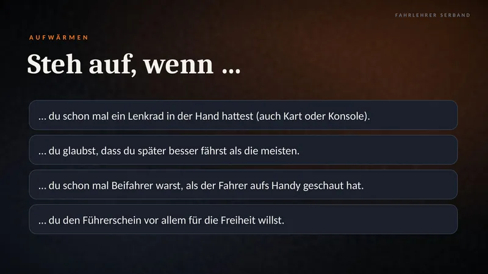
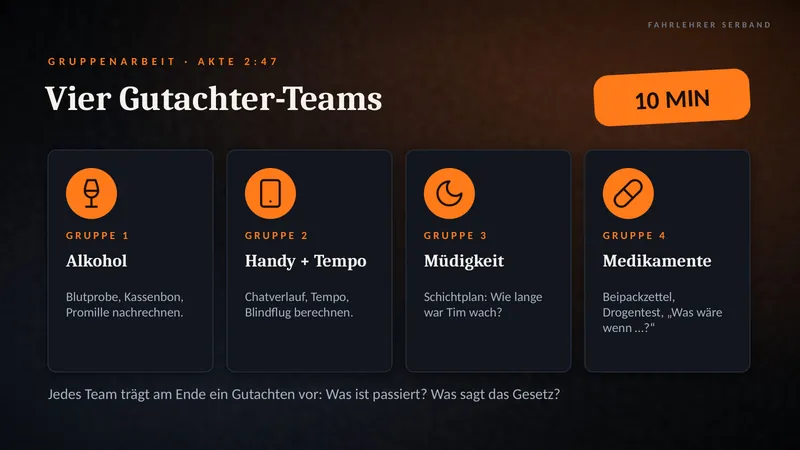
Von Anfang bis Ende
Alle 14 Lektionen
Jeder Abend hat zwei Lektionen. Hier siehst du alle 14 Lektionen der Reihe nach, mit echten Folien aus dem Unterricht.
-
Lektion 1 · Abend 1
Persönliche Voraussetzungen
Was brauchst du für den Führerschein, wie gut siehst du, und was bremst dich aus: Alkohol, Drogen, Müdigkeit und das Handy. Dazu: Wie schnell reagierst du eigentlich?

Die Promille-Treppe. In der Probezeit und unter 21 ist es einfach: 0,0. 
Akte 2:47. Ein ausgedachter Unfall, den ihr selbst aufklärt. Probier es selbst
Wie schnell reagierst du?
Tippe auf die Ampel. Sobald sie grün wird, tippst du so schnell du kannst. Wer zu früh drückt, fährt über Rot.
- Deine Zeit
- –
- Rekord
- 142 ms
- Reaktionsweg bei 50 km/h
- –
Bestenliste · Top 5
- Wird geladen …
-
Lektion 2 · Abend 1
Risikofaktor Mensch
Ärger, Angst, Übermut und Stress fahren mit. Wir schauen, wie gut du dich selbst einschätzt und was die Freunde auf der Rückbank ausmachen. In der Gruppenarbeit „Kopfkino“ spielt ihr vier Szenen in zwei Versionen durch.
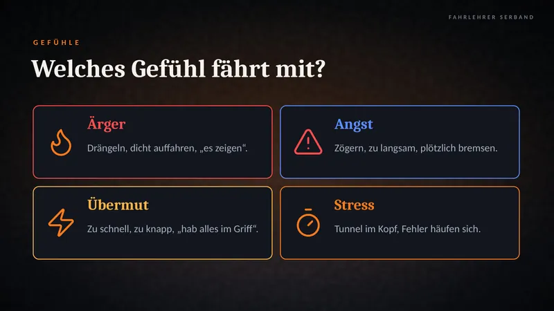
Welches Gefühl fährt mit? Ärger, Angst, Übermut oder Stress. 
Freunde im Auto. Mit drei und mehr Mitfahrern steigt das Risiko auf das Dreifache. -
Lektion 3 · Abend 2
Rechtliche Rahmenbedingungen
Wer macht die Regeln, was darfst du mit Klasse B, und was braucht ein Auto, bevor es fahren darf? Versicherung, TÜV und Zulassung spielt ihr im Rollenspiel selbst durch.
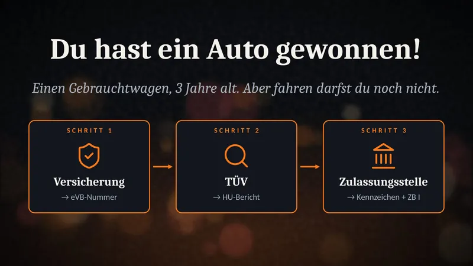
Du hast ein Auto gewonnen! Das Rollenspiel: Versicherung, TÜV, Zulassungsstelle. 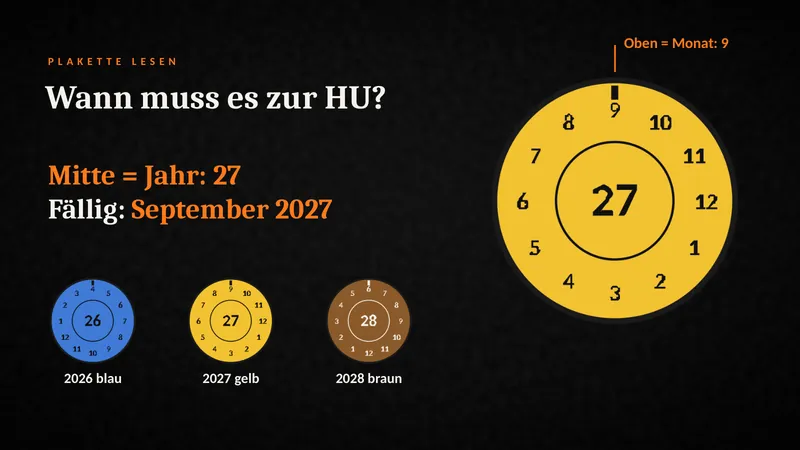
Plakette lesen. Wann muss das Auto zur Hauptuntersuchung? -
Lektion 4 · Abend 2
Straßenverkehrssystem
Rechts fahren, Linien, Sonderwege und die Autobahn. Danach wird der Raum zur A3.

Wem gehört dieser Weg? Vier Schilder, die ähnlich aussehen und doch Verschiedenes bedeuten. 
Aufbau in 2 Minuten. Aus drei Stuhlreihen werden drei Fahrspuren. -
Lektion 5 · Abend 3
Vorfahrt
Wer fährt zuerst? Von der Grundregel bis zur Einmündung, an der man nichts sieht.

Hineintasten. Siehst du nichts, rollst du Zentimeter für Zentimeter vor. 
Raus aus dem verkehrsberuhigten Bereich. Wer rauskommt, lässt alle anderen zuerst fahren. -
Lektion 6 · Abend 3
Verkehrszeichen
Schilder an Form und Farbe erkennen, Streckenverbote, Markierungen und der Bahnübergang.

Die Form verrät es. Dreieck und Achteck gibt es nur einmal. 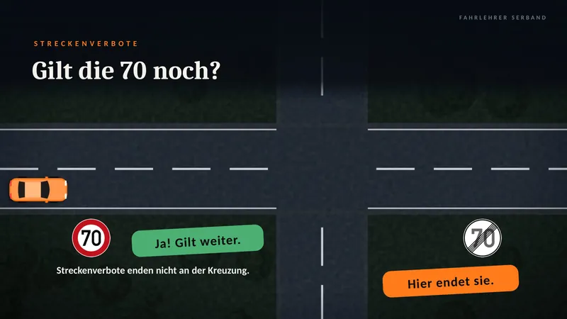
Gilt die 70 noch? Streckenverbote enden nicht an der Kreuzung. -
Lektion 7 · Abend 4
Geschwindigkeit, Abstand, Umwelt
Warum schon wenige km/h über Leben und Tod entscheiden, wie viel Abstand du brauchst und wie du Sprit sparst.
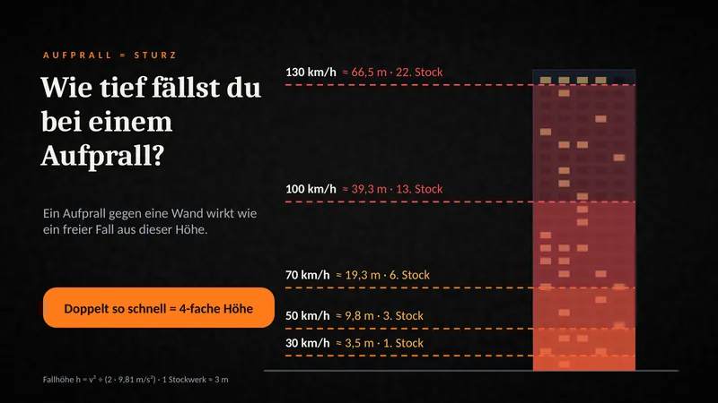
Wie tief fällst du? 50 km/h wirken wie ein Sturz aus dem 3. Stock. 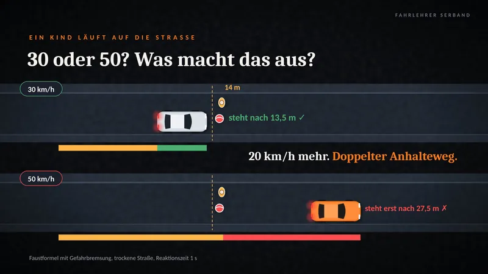
30 oder 50? Bei 30 km/h steht das Auto nach 13,5 m, bei 50 erst nach 27,5 m. -
Lektion 8 · Abend 4
Andere Verkehrsteilnehmer
Busse, Lkw, Radfahrer, Kinder und ältere Menschen: Wer ist wo besonders gefährdet, und wie nimmst du Rücksicht?
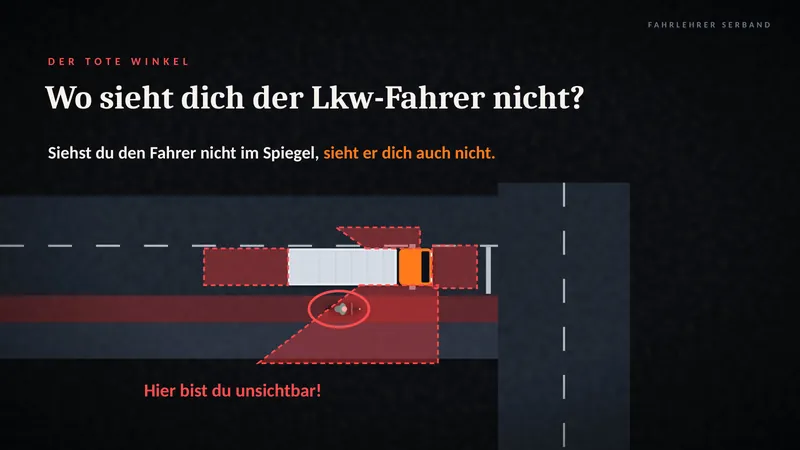
Wo sieht dich der Lkw-Fahrer nicht? Siehst du ihn nicht im Spiegel, sieht er dich auch nicht. 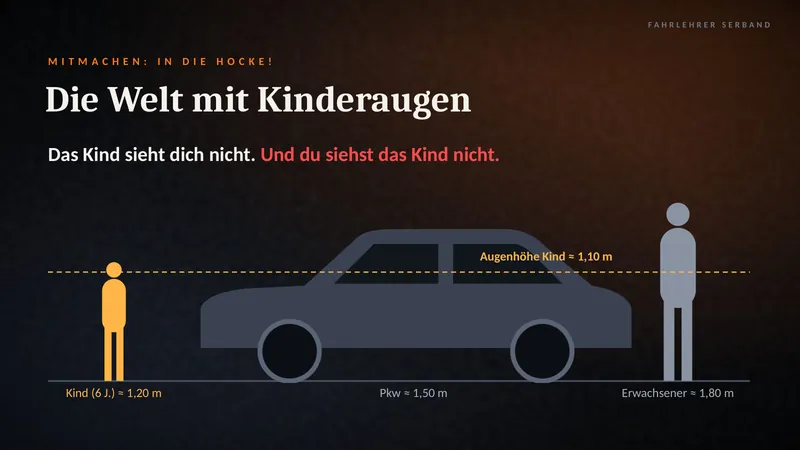
Die Welt mit Kinderaugen. Ein Kind ist kleiner als dein Auto. -
Lektion 9 · Abend 5
Fahrmanöver
Abbiegen, Überholen, Wenden und Rückwärtsfahren, Schritt für Schritt an der Kreuzung aufgezeichnet.
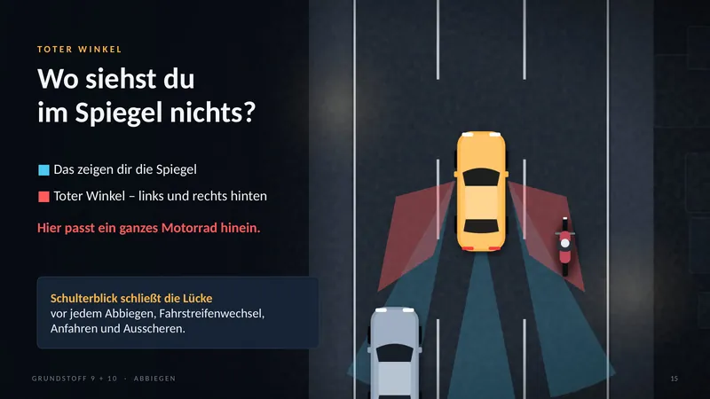
Wo siehst du im Spiegel nichts? Im toten Winkel hat ein ganzes Motorrad Platz. 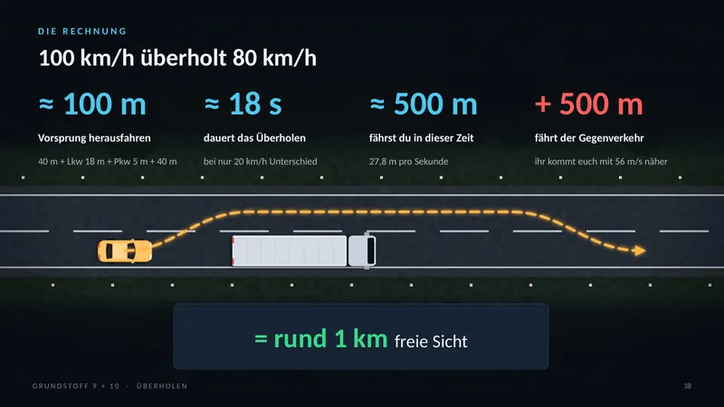
100 überholt 80. Dafür brauchst du rund einen Kilometer freie Sicht. -
Lektion 10 · Abend 5
Ruhender Verkehr
Halten und Parken: wo es erlaubt ist, wie lange, und wie du am Berg richtig stehst.
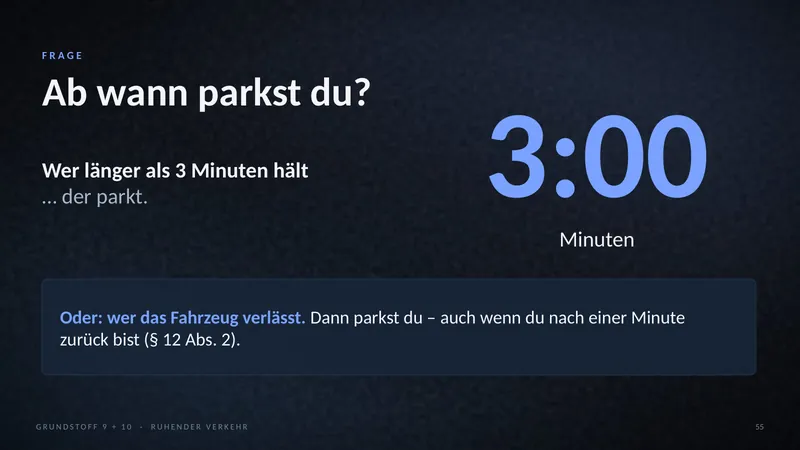
Ab wann parkst du? Wer länger als 3 Minuten hält oder das Auto verlässt. 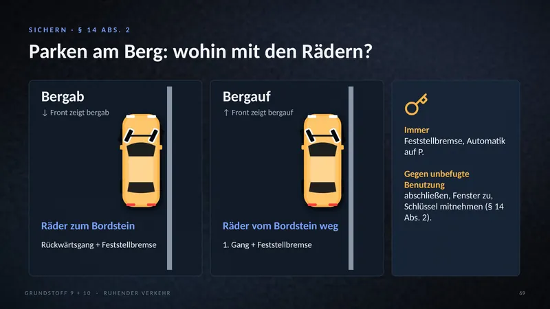
Parken am Berg. Bergab die Räder zum Bordstein, bergauf vom Bordstein weg. -
Lektion 11 · Abend 6
Besondere Verkehrssituationen
Nacht und Nebel, Blaulicht und Rettungsgasse, Verhalten im Tunnel.
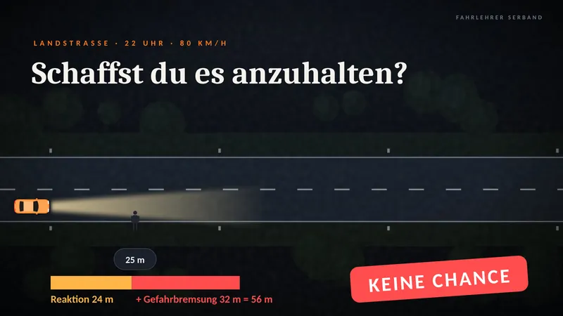
Schaffst du es anzuhalten? Nachts bei 80 km/h: 25 m Sicht, 56 m Anhalteweg. 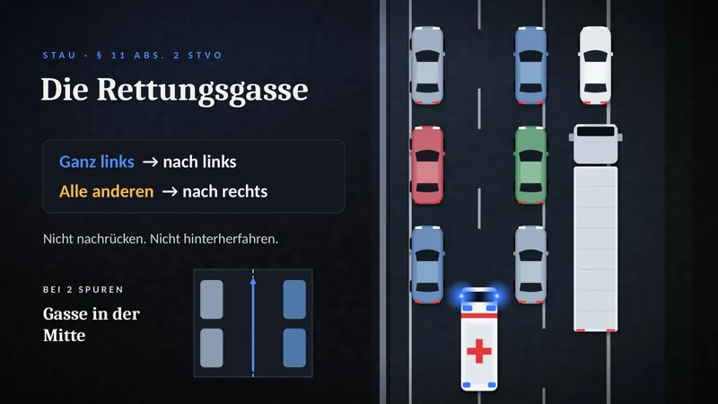
Die Rettungsgasse. Ganz links nach links, alle anderen nach rechts. -
Lektion 12 · Abend 6
Lebenslanges Lernen
Warum man beim Autofahren nie auslernt, wie du am besten lernst, und was in der Probezeit gilt.
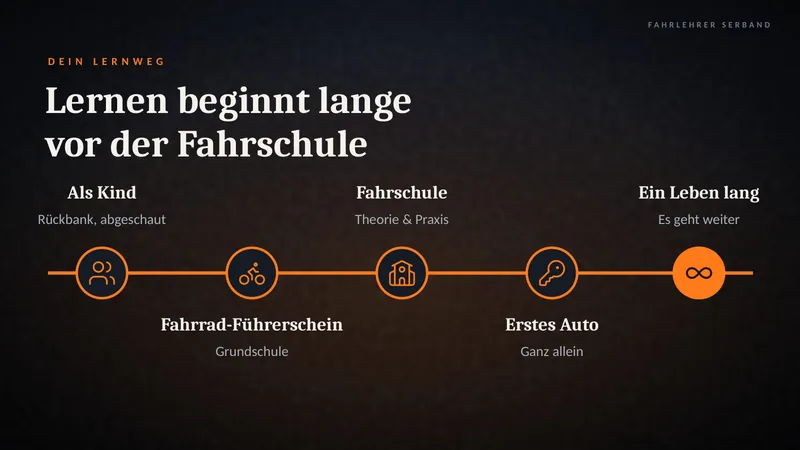
Lernen beginnt lange vor der Fahrschule. Von der Rückbank bis zum ersten eigenen Auto. 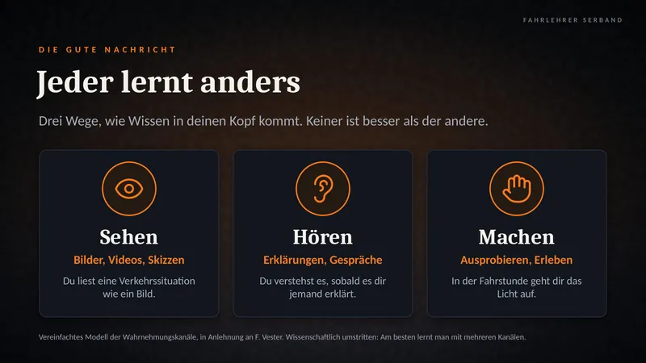
Jeder lernt anders. Hier findest du heraus, welcher Lerntyp du bist. -
Lektion 13 · Abend 7
Technik und Beförderung
Was du vor jeder Fahrt prüfst, merkst du dir mit einem Wort: WOLKEN. Wasser, Öl, Luft, Kraftstoff, Elektrik, Notfallausrüstung. Dazu: Licht und Kontrollleuchten, Reifen und Bremsen.
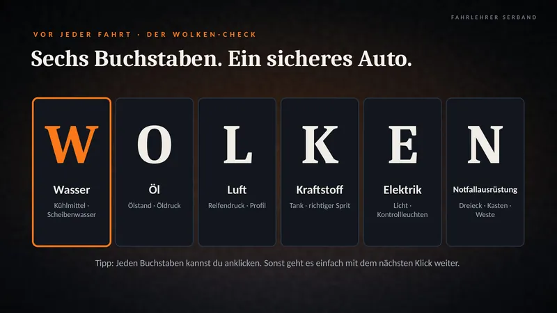
Der WOLKEN-Check. Sechs Buchstaben, ein sicheres Auto. 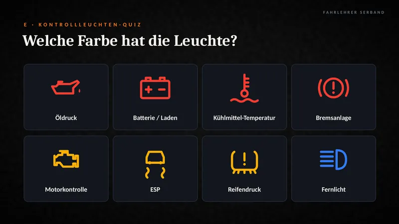
Welche Farbe hat die Leuchte? Rot heißt anhalten, Gelb heißt bald prüfen. -
Lektion 14 · Abend 7
Solokraftfahrzeuge und Züge
Ladung, Leute, Anhänger: Was darfst du mit Klasse B ziehen, wie sicherst du die Ladung, und wer braucht einen Kindersitz?
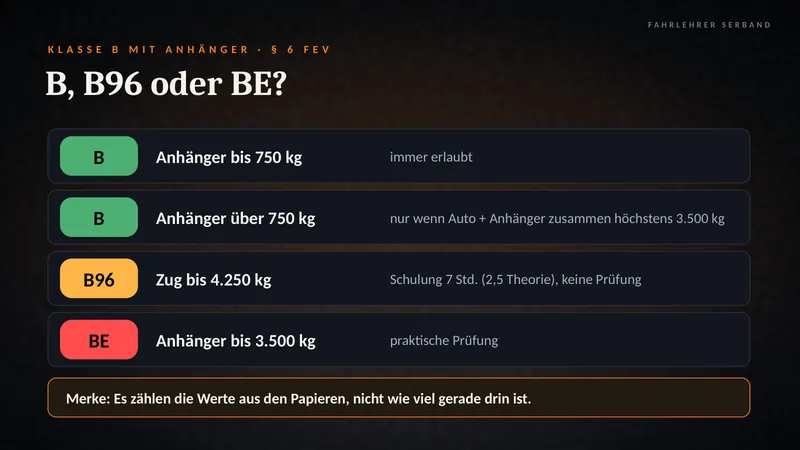
B, B96 oder BE? Es zählen die Werte aus den Papieren. 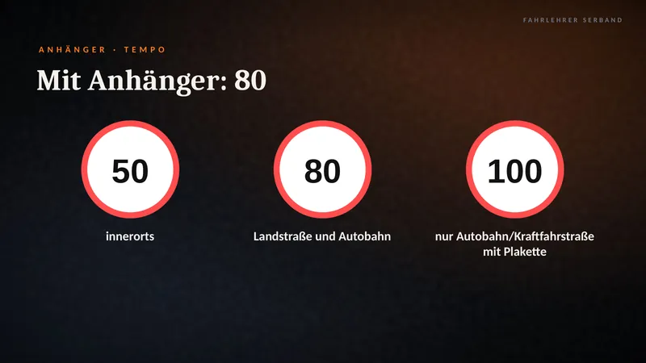
Mit Anhänger: 80. Mit Tempo-100-Plakette auch 100, aber nur auf Autobahn und Kraftfahrstraße.


Das war ein kleiner Ausschnitt. Den Rest zeige ich dir am liebsten live.